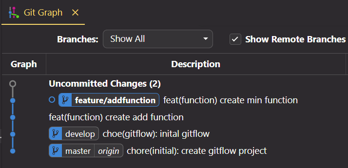

Git Flow Tutorial
Run:
1) git init => initialize repository =>
created master branch
2) git flow init => initialize Git Flow =>
created develop branch
3) git flow feature start namefeature =>
temporary branch namefeature created
4) git add .
5) git commit
6) repeat 3.1:

6) git flow feature finish namefeature
IMPORTANT!: using (start - finish) commands requires a minimum of two
commits to see the history of the temporary branch (Git Flow documentation).